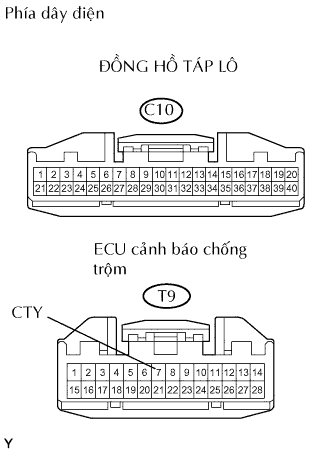
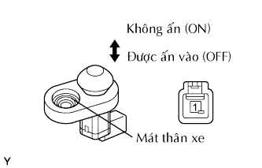
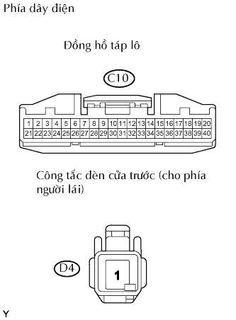

HỆ THỐNG CHỐNG TRỘM > Mạch Công Tắc Đèn Cửa Người Lái |
| 1.KIỂM TRA CỤM ĐỒNG HỒ TÁP LÔ |
Khi cửa phía lái xe mở/đóng, hãy kiểm tra rằng đèn báo trên bảng táplô hoạt động bình thường.
|
| ||||
| OK | |
| 2.KIỂM TRA DÂY ĐIỆN (ĐỒNG HỒ TÁP LÔ - ECU CẢNH BÁO CHỐNG TRỘM) |
|  |
Ngắt giắc nối C10 của bảng đồng hồ.
Ngắt giắc nối T9 của ECU.
Đo điện trở của các giắc nối phía dây điện.
| Nối dụng cụ đo | Điều kiện tiêu chuẩn |
| C10-17 - T9-7 (CTY) | Dưới 1 Ω |
Đo điện áp của giắc nối phía dây điện.
| Nối dụng cụ đo | Điều kiện tiêu chuẩn |
| C10-17 - Mát thân xe | 10 đến 14 V |
|
| ||||
| OK | ||
| ||
| 3.KIỂM TRA CỤM CÔNG TẮC ĐÈN CỬA TRƯỚC (PHÍA NGƯỜI LÁI) |
|  |
Đo điện trở của công tắc.
| Nối dụng cụ đo | Tình trạng công tắc | Điều kiện tiêu chuẩn |
| 1 - Mát thân xe | Không ấn (ON) | Dưới 1 Ω |
| 1 - Mát thân xe | Ấn (OFF) | 10 kΩ trở lên |
|
| ||||
| OK | |
| 4.KIỂM TRA DÂY ĐIỆN (ĐỒNG HỒ TÁP LÔ - CÔNG TẮC ĐÈN CỬA TRƯỚC (PHÍA NGƯỜI LÁI)) |
|  |
Ngắt giắc nối C10 của bảng đồng hồ.
Ngắt giắc nối D4 của công tắc.
Đo điện trở của các giắc nối phía dây điện.
| Nối dụng cụ đo | Điều kiện tiêu chuẩn |
| C10-16 - D4-1 | Dưới 1 Ω |
|
| ||||
| OK | ||
| ||